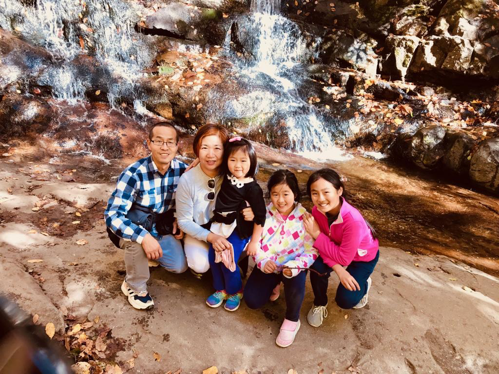

Education
Southwestern Baptist Theological Seminary, M.Div. in 2007; later doctoral study in Biblical Theology at Midwestern Baptist Theological Seminary.
Meet the current pastor of STLCBC and learn about his testimony, training, ministry journey, and family.

陳海全牧師於1973年出生於中國湖北。1993年畢業於湖北文理學院後, 曾任教於襄陽縣第三中學,擔任英語教師。1998年,他在湖北大學攻讀 中國古代歷史碩士學位。畢業後受聘為廣東潮州韓山師範學院的歷史講師。 2002年,他赴美進入夏威夷大學攻讀博士學位。
翌年,陳牧師蒙神呼召,並在國際浸信會團契的一致推薦及夏威夷 Shiraki 紀念基金會的資助下,轉入德州西南浸信會神學院,於2007年 獲得道學碩士學位。2007年7月,他受德州奧斯丁西北華人教會差派 返回中國,在山西太原的家庭教會神學院任聖經教師。
2008年1月,陳牧師與趙小朋(Anna)姊妹結為連理。同年,神引領他們 來到深圳寶安福永鎮的一個小村莊宣教,開拓並建立「城市福音教會」。 經過七年的辛勤服侍,從最初的一個家庭開始,發展至有約80人穩定聚會, 實屬神蹟。2010年7月,陳牧師接受中國基督教海外使團的按立,成為 該教會的牧師。
2014年,他重返美國,進入密歇根的加爾文神學院研讀系統神學;隔年1月 轉入密蘇里州堪薩斯城的中西部浸信會神學院,持續進修聖經神學博士課程。 2016年,陳牧師蒙主帶領,受邀至德州海灣華人教會擔任代理牧師,負責講道、 部分主日學及探訪事工。目前,陳牧師與師母育有三位可愛的女兒: Sheena、Esther 和 Hannah。
Pastor Mark Chen was born in 1973 in Hubei, China. After graduating from the Hubei University of Arts and Technology in 1993, he taught English at the Third Middle School of Xiangyang County. In 1998 he pursued a master’s degree in Ancient Chinese History at Hubei University. Upon graduation, he served as a history lecturer at Hanshan Teachers’ College in Chaozhou, Guangdong. In 2002 he came to the United States as a doctoral student at the University of Hawaii.
After receiving Jesus Christ as his personal Savior and answering the Lord’s call, he was recommended by the International Baptist Fellowship to enter Southwestern Baptist Theological Seminary in Fort Worth, Texas, with support from the Shiraki Memorial Foundation. He graduated in 2007 with a Master of Divinity. In July 2007 he was commissioned by the Northwestern Chinese Church of Austin, Texas to return to China, where he taught Bible classes in Taiyuan House Church Seminary in Shanxi Province.
Pastor Chen married Anna Zhao in January 2008. That same year, God led them to settle in a small village in Baoan District, Shenzhen, where they planted City Gospel Church. Through seven years of faithful ministry, the church grew from one family into a congregation of around 80 regular attendees. In July 2010 Pastor Chen was ordained by China Christian Overseas Mission and became the pastor of City Gospel Church.
In 2014 Pastor Chen returned to the United States to study Systematic Theology at Calvin Theological Seminary in Grand Rapids, Michigan. In January 2015 he transferred to Midwestern Baptist Theological Seminary in Kansas City, Missouri for doctoral study in Biblical Theology. In 2016, guided by the Lord, he was invited to serve at Galveston Chinese Church in Texas. Pastor Chen and Anna are blessed with three daughters: Sheena, Esther, and Hannah.
Southwestern Baptist Theological Seminary, M.Div. in 2007; later doctoral study in Biblical Theology at Midwestern Baptist Theological Seminary.
Bible teacher in Taiyuan, church planter in Shenzhen, and interim pastor at Galveston Chinese Church in Texas.
Married to Anna Zhao and blessed with three daughters: Sheena, Esther, and Hannah.
After receiving Jesus Christ as his personal Savior and responding to the Lord’s calling, Pastor Chen entered Southwestern Baptist Theological Seminary with the recommendation of the International Baptist Fellowship and support from the Shiraki Memorial Foundation. He graduated in 2007 with a Master of Divinity.
In July 2007 he was commissioned by the Northwestern Chinese Church of Austin, Texas to return to China, where he taught Bible at Taiyuan House Church Seminary. In 2008 he and Anna Zhao were married, and together they planted City Gospel Church in Shenzhen. By God’s grace, the church grew from one family to around 80 regular attendees. He was ordained in July 2010 by China Christian Overseas Mission.
In 2014 Pastor Chen returned to the United States to study Systematic Theology at Calvin Theological Seminary in Grand Rapids, Michigan. In January 2015 he transferred to Midwestern Baptist Theological Seminary in Kansas City, Missouri for doctoral study in Biblical Theology.
Guided by the Lord, Pastor Chen was invited in 2016 to serve as interim pastor at Galveston Chinese Church in Texas, where he preached, taught, and cared for the congregation. STLCBC is grateful to introduce him as our current pastor.